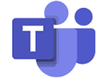

El área de Infraestructura es la encargada de dar soporte técnico a las herramientas de trabajo de toda la compañía. Realizar despliegues y las respectivas solicitudes que sean informadas. El área de Infraestructura vela por tener un ambiente laboral más práctico, disminuyendo problemas técnicos.
Todos los requerimientos, incidentes y solicitudes de soporte, despliegues, ingresos y egresos de personal, serán recibidos únicamente por medio del correo de
servicedesk@topgroup.com.co
con copia a
tecnologia@topgroup.com.co
El portal de Redmine se usa para cargar las horas de trabajo dedicadas a cada proyecto y se hace de la siguiente manera:
1. Ingresa a Redmine dando click AQUí
2. Inicia sesión con tus credenciales de red
Existen dos fomas de subir tus horas:  a. Tiempo dedicado: Podrás subir tus horas de manera individual a medida que las vayas realizando.
PROYECTO: Seleccionas el proyecto en el que trabajaste.
a. Tiempo dedicado: Podrás subir tus horas de manera individual a medida que las vayas realizando.
PROYECTO: Seleccionas el proyecto en el que trabajaste.
PETICIÓN: Ingresas el código de la actividad.
FECHA: Ingresas la fecha del dia en el que trabajaste las horas.
HORAS: Ingresas la cantidad de horas trabajadas.
COMENTARIOS: Colocas los comentarios a cerca de tu actividad.
b. Importar horas: Podrás subir todas las horas de la semana en un solo archivo CSV, a continuación la plantilla básica:
Una vez completes el archivos lo vas a guardar como archivo CSV, agregas el archivo ya guardado y asegurate de que el mapeo de campos sea el siguiente:
Todo se subirá con éxito cuando aparezca el sigueinte mensaje, de lo contrario contáctanos
3. Valida con tu equipo el formato y los códigos de proyecto que se usan en tu área.
4. Las horas deben ser subidas semanalmente o el último día hábil de cada mes.
Alguna duda o inquietud comunícate con nosotros al correo:
tecnologia@topgroup.com.co
Los medios de comunicación autorizados y formales dentro de la compañía son:
|  | Microsoft Teams: Herramienta de chat corporativa que permite la comunicación directa con todos los integrantes de la compañía. |
| Outlook: Herramienta de Correo electrónico corporativo que permite la comunicación formal de la información. | |
| Extensión telefónica (3CX): Herramienta corporativa de comunicación telefónica, interna y externa. |
La conexión a la VPN es parte fundamental para nuestro trabajo. Debes conectarte a esta SOLAMENTE cuando estes trabajando fuera de la oficina. A continuación este video te explicará como acceder a la conexión por VPN:
Permite la comunicación telefónica con personas internas y externas de la compañía, en la inducción se hace entrega de la extensión corporativa asignada. Para llamar hay que tener en cuenta:
- ¬Llamadas entre extensiones: Se marca directamente el número de la extensión
- ¬Llamadas a números fijos: Se marca 60 + indicativo de la ciudad + número fijo
- ¬Llamadas a celular: Se marca el número de celular, luego el sistema pide una clave, se debe marcar la clave 2019